Постные блюда
Без мяса, молока и яиц — для поста и веганского меню. 123 рецептов: у каждого время, калории и БЖУ на порцию, пошаговые инструкции и список покупок
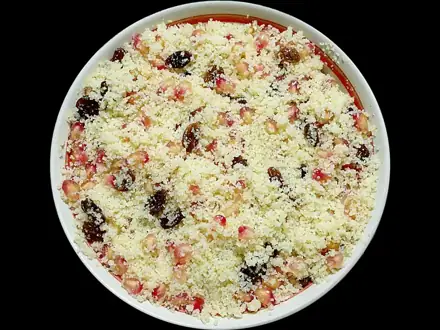
Кускус10 мин · 233 ккал · Б 6 г · Гарнир Салат из свежих овощей10 мин · 130 ккал · Б 2 г · Салат
Салат из свежих овощей10 мин · 130 ккал · Б 2 г · Салат Ачичук10 мин · 41 ккал · Б 2 г · Салат
Ачичук10 мин · 41 ккал · Б 2 г · Салат Салат из квашеной капусты с луком и маслом10 мин · 167 ккал · Б 3 г · Салат
Салат из квашеной капусты с луком и маслом10 мин · 167 ккал · Б 3 г · Салат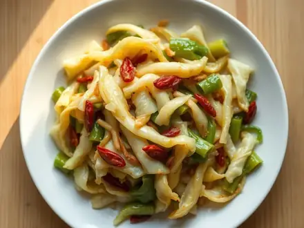
Капуста, жаренная по-китайски с чесноком и соевым соусом15 мин · 246 ккал · Б 7 г · Второе блюдо Постный скрэмбл из тофу с помидорами15 мин · 216 ккал · Б 13 г · Завтрак
Постный скрэмбл из тофу с помидорами15 мин · 216 ккал · Б 13 г · Завтрак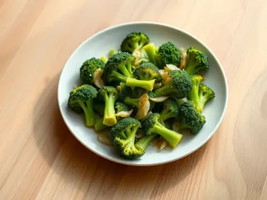
Брокколи с чесноком на сковороде15 мин · 132 ккал · Б 4 г · Гарнир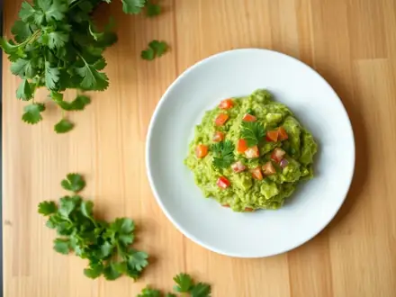
Гуакамоле из авокадо15 мин · 150 ккал · Б 2 г · Закуска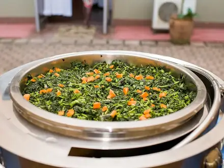
Овощи на пару20 мин · 127 ккал · Б 5 г · Гарнир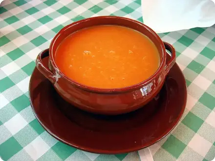
Гаспачо20 мин · 185 ккал · Б 4 г · Суп Панцанелла с помидорами20 мин · 370 ккал · Б 8 г · Салат
Панцанелла с помидорами20 мин · 370 ккал · Б 8 г · Салат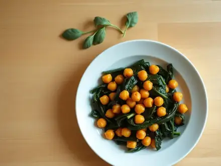
Нут со шпинатом по-испански с чесноком и паприкой20 мин · 378 ккал · Б 15 г · Второе блюдо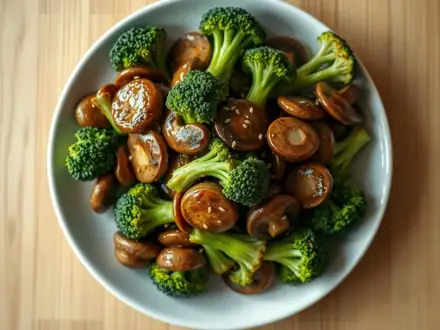
Брокколи с шампиньонами в соевом соусе20 мин · 297 ккал · Б 14 г · Второе блюдо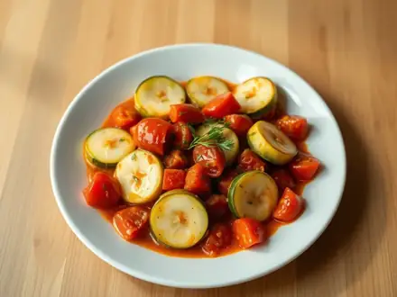
Кабачки с помидорами и чесноком на сковороде20 мин · 329 ккал · Б 4 г · Второе блюдо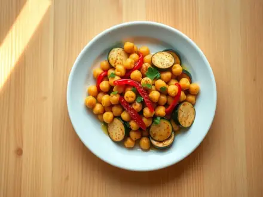
Нут с кабачком и перцем на сковороде20 мин · 412 ккал · Б 13 г · Второе блюдо Салат «Витаминный» из капусты с морковью и яблоком20 мин · 141 ккал · Б 3 г · Салат
Салат «Витаминный» из капусты с морковью и яблоком20 мин · 141 ккал · Б 3 г · Салат Фаттуш - ливанский салат с хрустящей лепёшкой20 мин · 206 ккал · Б 5 г · Салат
Фаттуш - ливанский салат с хрустящей лепёшкой20 мин · 206 ккал · Б 5 г · Салат Битые огурцы по-китайски с чесноком20 мин · 135 ккал · Б 2 г · Салат
Битые огурцы по-китайски с чесноком20 мин · 135 ккал · Б 2 г · Салат Грузинский салат из помидоров и огурцов с грецкими орехами20 мин · 175 ккал · Б 5 г · Салат
Грузинский салат из помидоров и огурцов с грецкими орехами20 мин · 175 ккал · Б 5 г · Салат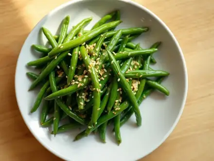
Стручковая фасоль с чесноком и кунжутом20 мин · 128 ккал · Б 4 г · Гарнир- Брускетта с помидорами и базиликом20 мин · 270 ккал · Б 6 г · Закуска
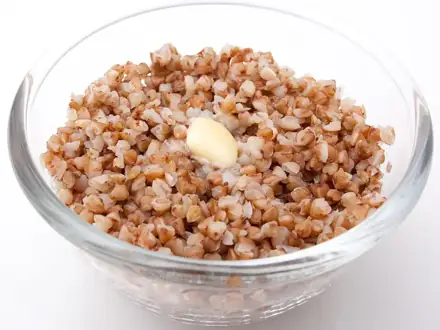
Гречка рассыпчатая25 мин · 156 ккал · Б 6 г · Гарнир- Рис рассыпчатый25 мин · 194 ккал · Б 3 г · Гарнир
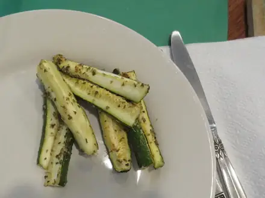
Кабачки жареные с чесноком25 мин · 264 ккал · Б 3 г · Закуска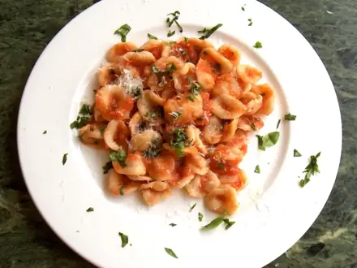
Паста с томатным соусом25 мин · 479 ккал · Б 13 г · Второе блюдо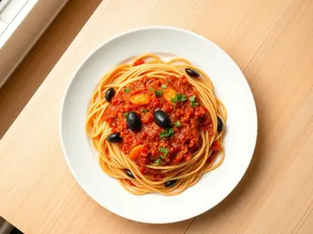
Паста путтанеска с маслинами25 мин · 579 ккал · Б 13 г · Второе блюдо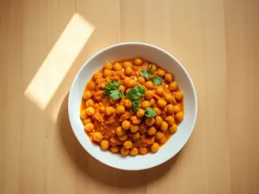
Чана масала (нут в томатном соусе)25 мин · 386 ккал · Б 15 г · Второе блюдо- Тайское карри с тофу и овощами25 мин · 463 ккал · Б 14 г · Второе блюдо
- Тофу в кисло-сладком соусе25 мин · 444 ккал · Б 15 г · Второе блюдо
- Тофу по-корейски в остром соусе (дубу чорим)25 мин · 323 ккал · Б 18 г · Второе блюдо
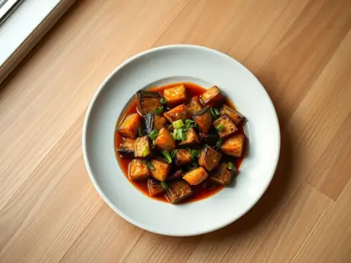
Баклажаны по-сычуаньски с чесноком25 мин · 392 ккал · Б 6 г · Второе блюдо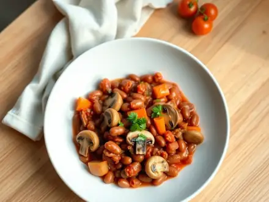
Фасоль, тушённая с грибами25 мин · 431 ккал · Б 22 г · Второе блюдо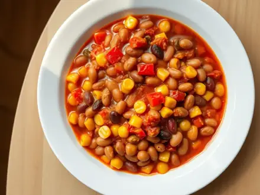
Фасоль по-мексикански с кукурузой и перцем25 мин · 480 ккал · Б 23 г · Второе блюдо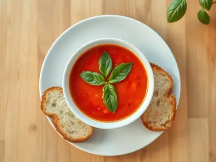
Томатный суп-пюре с базиликом25 мин · 154 ккал · Б 3 г · Суп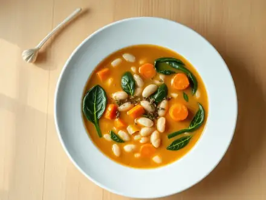
Суп с белой фасолью и шпинатом25 мин · 289 ккал · Б 15 г · Суп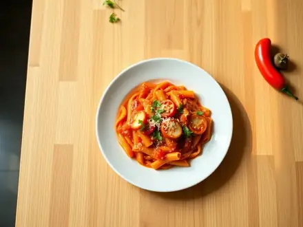
Паста арраббьята в остром томатном соусе25 мин · 532 ккал · Б 13 г · Второе блюдо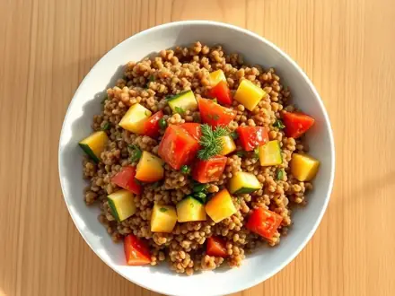
Гречка с кабачком и помидорами на сковороде25 мин · 457 ккал · Б 13 г · Второе блюдо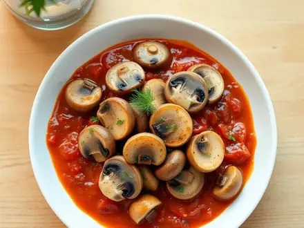
Шампиньоны, тушённые в томатном соусе с луком25 мин · 261 ккал · Б 13 г · Второе блюдо- Котлеты из консервированного нута25 мин · 455 ккал · Б 15 г · Второе блюдо
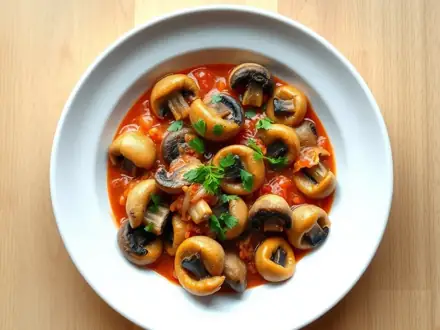
Грибной гуляш с паприкой постный25 мин · 307 ккал · Б 15 г · Второе блюдо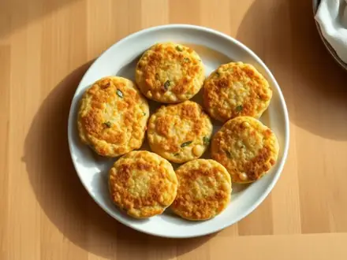
Постные котлеты из фасоли25 мин · 595 ккал · Б 23 г · Второе блюдо- Тофу в арахисовом соусе со стручковой фасолью25 мин · 435 ккал · Б 21 г · Второе блюдо
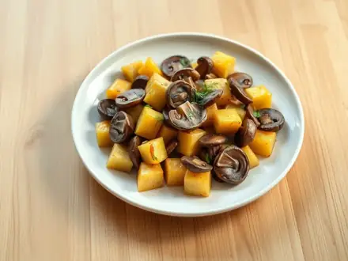
Кабачки с грибами, тушённые с луком25 мин · 342 ккал · Б 9 г · Второе блюдо- Мцване лобио: стручковая фасоль по-грузински с орехами25 мин · 408 ккал · Б 11 г · Второе блюдо
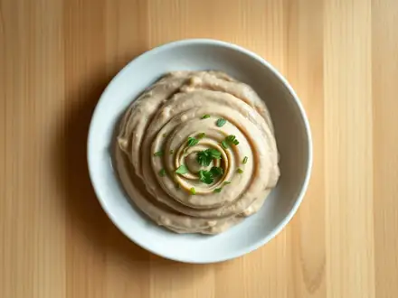
Паштет из фасоли с чесноком и жареным луком25 мин · 125 ккал · Б 5 г · Закуска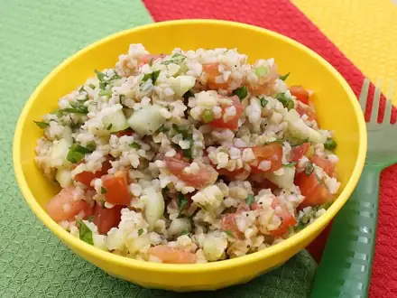
Булгур с овощами30 мин · 272 ккал · Б 8 г · Гарнир- Тофу с овощами и соевым соусом30 мин · 330 ккал · Б 16 г · Второе блюдо
 Табуле30 мин · 204 ккал · Б 4 г · Салат
Табуле30 мин · 204 ккал · Б 4 г · Салат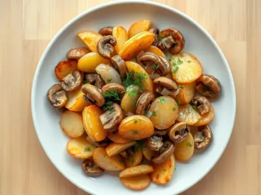
Жареная картошка с грибами30 мин · 395 ккал · Б 10 г · Второе блюдо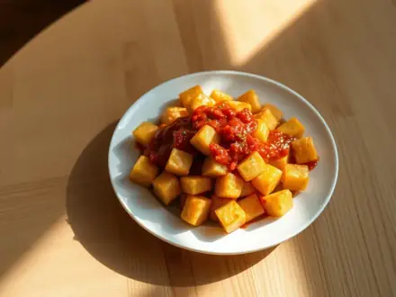
Пататас бравас (картошка в остром томатном соусе)30 мин · 390 ккал · Б 7 г · Второе блюдо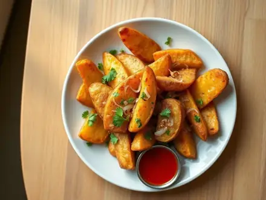
Жареная картошка по-грузински с кинзой30 мин · 392 ккал · Б 7 г · Второе блюдо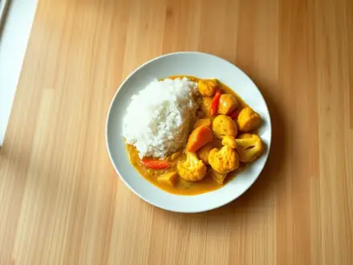
Овощное карри с кокосовым молоком и рисом30 мин · 548 ккал · Б 11 г · Второе блюдо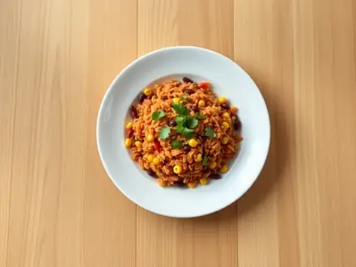
Рис по-мексикански с фасолью и кукурузой30 мин · 449 ккал · Б 14 г · Второе блюдо- Гречка с овощами и соевым соусом по-азиатски30 мин · 390 ккал · Б 13 г · Второе блюдо
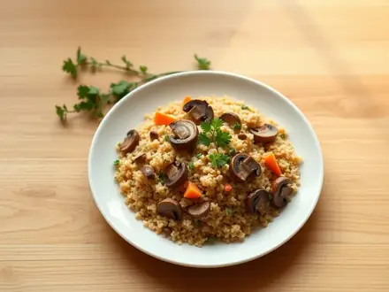
Булгур с грибами и луком30 мин · 415 ккал · Б 14 г · Второе блюдо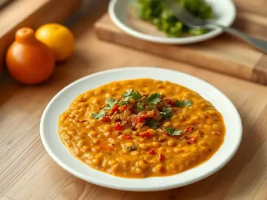
Дал из красной чечевицы30 мин · 317 ккал · Б 17 г · Второе блюдо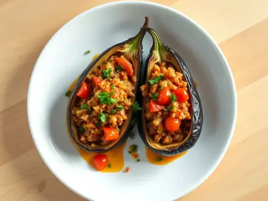
Имам баялды (баклажаны с луком и помидорами)30 мин · 395 ккал · Б 8 г · Второе блюдо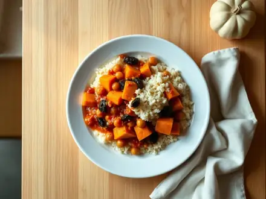
Тушёная тыква с нутом по-мароккански30 мин · 295 ккал · Б 10 г · Второе блюдо- Морковный суп-пюре с имбирём30 мин · 211 ккал · Б 3 г · Суп
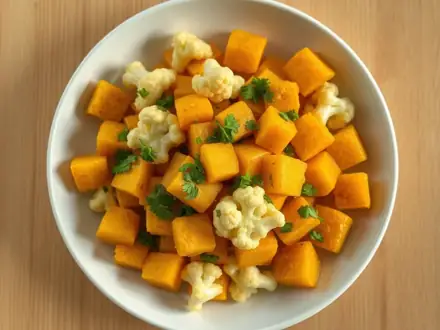
Алу гоби - картошка с цветной капустой по-индийски30 мин · 305 ккал · Б 8 г · Второе блюдо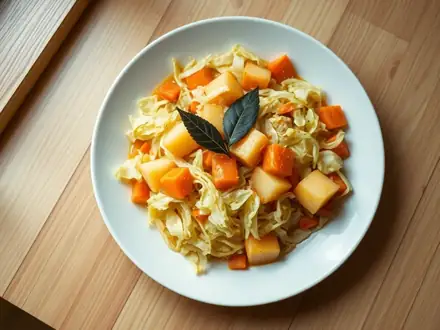
Картошка, тушённая с капустой30 мин · 284 ккал · Б 7 г · Второе блюдо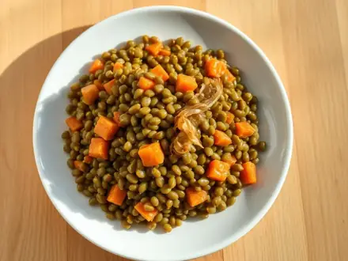
Чечевица с морковью и луком30 мин · 415 ккал · Б 21 г · Второе блюдо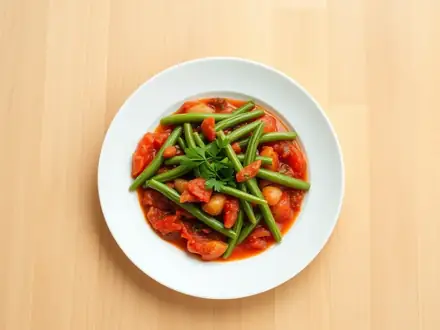
Стручковая фасоль в томатном соусе по-гречески30 мин · 313 ккал · Б 8 г · Второе блюдо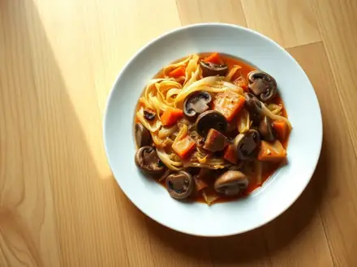
Капустная солянка с грибами на сковороде30 мин · 263 ккал · Б 9 г · Второе блюдо- Грибные котлеты с овсяными хлопьями постные30 мин · 408 ккал · Б 14 г · Второе блюдо
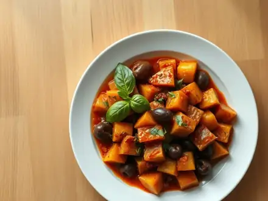
Капоната - сицилийское рагу из баклажанов30 мин · 325 ккал · Б 5 г · Второе блюдо Фунчоза с овощами по-корейски30 мин · 284 ккал · Б 5 г · Салат
Фунчоза с овощами по-корейски30 мин · 284 ккал · Б 5 г · Салат Салат с киноа, авокадо и овощами30 мин · 329 ккал · Б 8 г · Салат
Салат с киноа, авокадо и овощами30 мин · 329 ккал · Б 8 г · Салат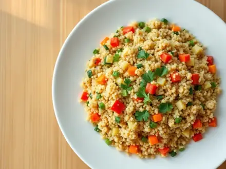
Киноа с овощами на сковороде30 мин · 284 ккал · Б 9 г · Гарнир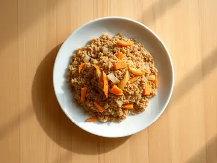
Гречка с жареным луком и морковью30 мин · 348 ккал · Б 11 г · Гарнир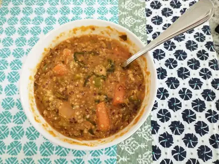
Суп из красной чечевицы35 мин · 280 ккал · Б 14 г · Суп Цветная капуста в духовке35 мин · 209 ккал · Б 7 г · Гарнир
Цветная капуста в духовке35 мин · 209 ккал · Б 7 г · Гарнир Постное овсяное печенье35 мин · 347 ккал · Б 6 г · Десерт
Постное овсяное печенье35 мин · 347 ккал · Б 6 г · Десерт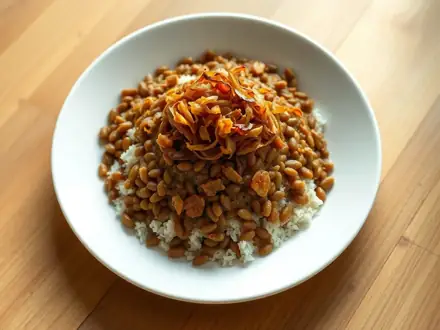
Муджадара (чечевица с рисом и жареным луком)35 мин · 415 ккал · Б 13 г · Второе блюдо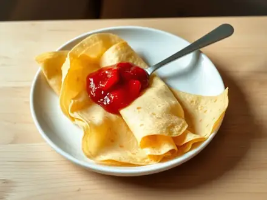
Постные блины на минеральной воде35 мин · 282 ккал · Б 5 г · Завтрак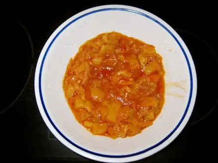
Лечо из перца и помидоров40 мин · 204 ккал · Б 5 г · Гарнир- Суп-пюре из батата с кокосовым молоком40 мин · 280 ккал · Б 4 г · Суп
 Батат дольками в духовке с паприкой40 мин · 245 ккал · Б 3 г · Гарнир
Батат дольками в духовке с паприкой40 мин · 245 ккал · Б 3 г · Гарнир- Щи из свежей капусты45 мин · 119 ккал · Б 4 г · Суп
 Пхали из шпината45 мин · 198 ккал · Б 8 г · Закуска
Пхали из шпината45 мин · 198 ккал · Б 8 г · Закуска- Гречка по-купечески постная с грибами45 мин · 386 ккал · Б 14 г · Второе блюдо
 Овощи, запечённые в духовке с травами45 мин · 183 ккал · Б 5 г · Гарнир
Овощи, запечённые в духовке с травами45 мин · 183 ккал · Б 5 г · Гарнир Тыква, запечённая дольками в духовке45 мин · 128 ккал · Б 3 г · Гарнир
Тыква, запечённая дольками в духовке45 мин · 128 ккал · Б 3 г · Гарнир- Домашние чипсы из картофеля в духовке45 мин · 165 ккал · Б 3 г · Закуска
- Грибной суп50 мин · 163 ккал · Б 5 г · Суп
 Картофель дольками в духовке50 мин · 290 ккал · Б 5 г · Гарнир
Картофель дольками в духовке50 мин · 290 ккал · Б 5 г · Гарнир- Тушёная капуста50 мин · 191 ккал · Б 6 г · Гарнир
- Овощное рагу50 мин · 228 ккал · Б 5 г · Второе блюдо
- Котлеты из чечевицы50 мин · 428 ккал · Б 18 г · Второе блюдо
- Минестроне50 мин · 235 ккал · Б 8 г · Суп
- Грибная лапша постная50 мин · 168 ккал · Б 7 г · Суп
 Печёный болгарский перец с чесноком55 мин · 134 ккал · Б 3 г · Гарнир
Печёный болгарский перец с чесноком55 мин · 134 ккал · Б 3 г · Гарнир- Аджапсандали60 мин · 288 ккал · Б 5 г · Гарнир
- Постные котлеты из капусты60 мин · 260 ккал · Б 7 г · Второе блюдо
- Картофельное рагу с грибами60 мин · 315 ккал · Б 10 г · Второе блюдо
- Щи постные с грибами60 мин · 164 ккал · Б 5 г · Суп
- Суп из зелёной чечевицы с овощами постный60 мин · 227 ккал · Б 12 г · Суп
 Салат из печёных перцев с чесноком и кинзой60 мин · 161 ккал · Б 3 г · Салат
Салат из печёных перцев с чесноком и кинзой60 мин · 161 ккал · Б 3 г · Салат- Бабагануш из печёных баклажанов60 мин · 205 ккал · Б 5 г · Закуска
 Постный пирог с яблоками70 мин · 346 ккал · Б 4 г · Выпечка
Постный пирог с яблоками70 мин · 346 ккал · Б 4 г · Выпечка- Борщ постный с фасолью70 мин · 197 ккал · Б 8 г · Суп
- Баклажанная икра из печёных овощей70 мин · 126 ккал · Б 3 г · Закуска
 Рататуй75 мин · 186 ккал · Б 4 г · Второе блюдо
Рататуй75 мин · 186 ккал · Б 4 г · Второе блюдо Винегрет75 мин · 178 ккал · Б 4 г · Салат
Винегрет75 мин · 178 ккал · Б 4 г · Салат- Перловка с грибами и луком80 мин · 338 ккал · Б 10 г · Гарнир
- Кисель ягодный густой80 мин · 222 ккал · Б 1 г · Десерт
- Гороховый суп постный90 мин · 228 ккал · Б 10 г · Суп
- Гороховое пюре90 мин · 301 ккал · Б 16 г · Гарнир
- Вареники с картошкой100 мин · 515 ккал · Б 12 г · Второе блюдо
- Кабачковая икра на сковороде100 мин · 146 ккал · Б 2 г · Закуска
 Хумус120 мин · 290 ккал · Б 10 г · Закуска
Хумус120 мин · 290 ккал · Б 10 г · Закуска- Жареные пирожки с картошкой120 мин · 446 ккал · Б 8 г · Выпечка
 Фокачча с чесноком и травами135 мин · 286 ккал · Б 7 г · Выпечка
Фокачча с чесноком и травами135 мин · 286 ккал · Б 7 г · Выпечка- Малосольные огурцы в пакете за 2 часа135 мин · 35 ккал · Б 2 г · Закуска
- Лобио из фасоли150 мин · 426 ккал · Б 20 г · Второе блюдо
- Фасолевый суп постный150 мин · 160 ккал · Б 9 г · Суп
- Домашняя халва из семечек160 мин · 325 ккал · Б 8 г · Десерт
 Баклажаны по-корейски165 мин · 241 ккал · Б 4 г · Салат
Баклажаны по-корейски165 мин · 241 ккал · Б 4 г · Салат Свёкла по-корейски200 мин · 147 ккал · Б 2 г · Салат
Свёкла по-корейски200 мин · 147 ккал · Б 2 г · Салат Домашний хлеб на дрожжах в духовке210 мин · 192 ккал · Б 5 г · Выпечка
Домашний хлеб на дрожжах в духовке210 мин · 192 ккал · Б 5 г · Выпечка- Ягодный сорбет домашний260 мин · 210 ккал · Б 1 г · Десерт
 Маринованные шампиньоны домашние390 мин · 136 ккал · Б 6 г · Закуска
Маринованные шампиньоны домашние390 мин · 136 ккал · Б 6 г · Закуска- Гречка с грибами и луком35 мин · 332 ккал · Б 13 г · Второе блюдо
Другие подборки
- Что приготовить из курицы
- Что приготовить из фарша
- Что приготовить из мяса
- Что приготовить из рыбы
- Что приготовить из картошки
- Что приготовить из яиц
- Что приготовить из творога
- Что приготовить из кабачков
- Что приготовить из капусты
- Что приготовить из грибов
- Что приготовить из риса
- Что приготовить из макарон
- Что приготовить из гречки
- Быстрый ужин за 30 минут
- Быстрый завтрак за 20 минут
- Что приготовить на скорую руку
- ПП-рецепты: лёгкие блюда до 400 ккал
- Белковые блюда: от 25 г белка на порцию
- Дешёвые рецепты из простых продуктов
- Что приготовить ребёнку
- Блюда на пару
- Что приготовить в духовке
- Простые супы
- Простые салаты
- Выпечка и десерты
- Блюда на праздничный стол
- Что приготовить из остатков